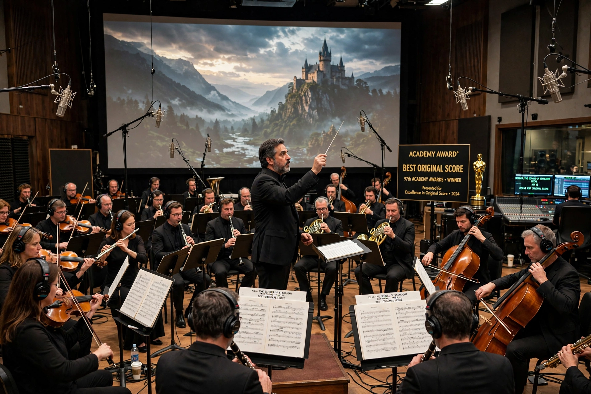

Academy Award for Best Original Score

| Awarded for | Best musical score for a film |
|---|---|
| Presented by | Academy of Motion Picture Arts and Sciences |
| First awarded | 1935 (for 1934 films) |
| Most wins | John Williams (5 in this category) |
The Academy Award for Best Original Score is an award presented annually by the Academy of Motion Picture Arts and Sciences to the best substantial body of music, in the form of dramatic underscoring, written specifically for a film by the submitting composer. The category has existed in various forms since the 7th Academy Awards in 1935, and at times was split between original score, scoring of a musical picture, and adaptation categories.
History
Early winners included Max Steiner and Erich Wolfgang Korngold. For decades the category alternated between combined and split formats: from the 1960s to the 1980s there were separate awards for original (dramatic) scores and song scores or adaptation scores for musicals. Since the mid-1990s a single Best Original Score category has generally been used, with a brief split between dramatic and musical/comedy scores from 1996 to 1999. Composers such as Alfred Newman (nine Oscars across scoring categories), John Williams, Howard Shore, Alexandre Desplat and Trent Reznor and Atticus Ross have won in the modern era; Hildur Guðnadóttir (Joker) became the first woman to win the combined category outright.
Eligibility
Scores must consist predominantly of original music written for the film; pre-existing music and songs must not dominate. A shortlist is announced by the Academy's music branch before nominations.